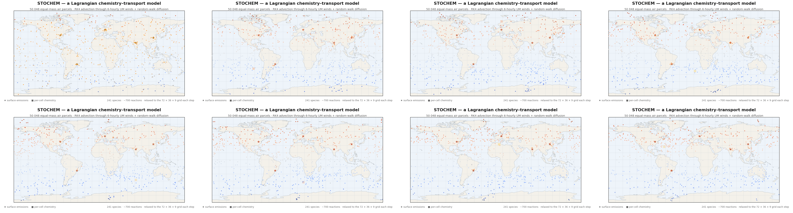

How STOCHEM-CRI works
STOCHEM is a global three-dimensional Lagrangian tropospheric chemistry–transport model: instead of solving chemistry on a fixed grid, it follows tens of thousands of individual air parcels as they are blown around the atmosphere, and integrates a detailed chemical mechanism inside every single one.[1]
The one-sentence idea
An Eulerian model (like most weather and climate models) divides the atmosphere into a fixed mesh of boxes and solves transport as fluxes between them. STOCHEM does the opposite: it keeps the meteorological description on a grid (winds, temperature, humidity, clouds from a numerical weather prediction model), but represents the chemistry inside ~50,000 moving air parcels. Each parcel carries a full vector of ~241 chemical species and integrates the CRI photochemical mechanism as it travels — collecting emissions, being mixed by turbulence and convection, and losing material to dry and wet deposition.[1],[2]

Why Lagrangian?
The approach has two big practical advantages.[2] First, advection is trivial and exact — each parcel simply follows the wind — so there is no numerical diffusion smearing out plumes, and no negative-mixing-ratio artefacts. Second, the expensive part (integrating the chemical mechanism) is done once per parcel per timestep and is embarrassingly parallel across parcels, which is why STOCHEM ports well to OpenMP. The cost is that "diffusion" is not automatic: sub-grid mixing is emulated by stochastically redistributing the parcels assigned to each grid cell — hence the name, STOchastic CHEMistry model.
The CRI mechanism
The chemistry is the Common Representative Intermediates mechanism (CRI v2-R5), a reduced VOC-oxidation mechanism systematically derived from the near-explicit Master Chemical Mechanism (MCM v3.1).[3],[4],[5] VOC intermediates are lumped into generic "common representative" species indexed by their number of reactive C–C and C–H bonds — a simple proxy for photochemical ozone-forming potential — which lets the mechanism describe methane plus ~120 non-methane VOCs with a few hundred species instead of the MCM's many thousands. A dedicated secondary organic aerosol (SOA) module handles gas-to-particle partitioning.[6] Extended variants add non-acyl peroxy nitrates (RO2NO2) as upper-tropospheric NOx reservoirs[7] and peroxy-radical–water complexes.[8]
One timestep, end to end
What it has been used for
- Global tropospheric ozone budgets and the response of O3 to NOx emission controls.[1]
- Altitude-resolved aircraft NOx emissions and their ozone impact.[9]
- Transport validation against 222Rn, including boundary-layer and convective schemes.[2],[10]
- Global budgets of PAN,[11] peroxy radicals and RO2·H2O complexes,[8] and RO2NO2 reservoirs.[7]
- Secondary organic aerosol formation from lumped VOC precursors.[6]
- Emission-scenario studies — including hydrogen- and alternative-fuel aviation perturbations — run on HPC clusters such as Blue Pebble.